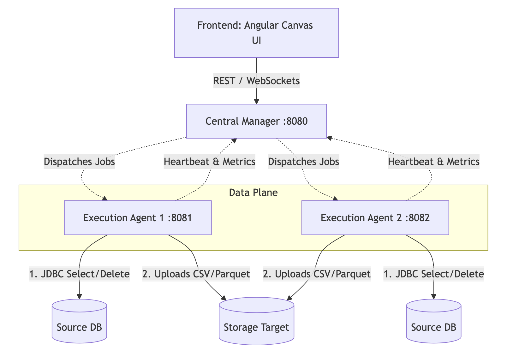

Architectural Model & Distributed Requirements
This platform is specifically designed to meet the following enhanced requirements:
Decoupled Architecture (Manager vs. Agent):
Central Manager (Control Plane): A centralized system that stores archiving policies, targets, and maintains the global state.
Execution Agents (Data Plane): Lightweight, stateless services running on remote VMs/Pods near the source databases. They are responsible for executing the heavy lifting: database extraction, file conversion, cloud uploading, and the safe-purge.
Dynamic Agent Registration & Heartbeats:
Agents dynamically ping the manager on startup and maintain a persistent heartbeat, reporting their health, load metrics, and active jobs.
Live Network Topology UI (Canvas):
The UI features a visual graph (node-and-edge) canvas mapping out the infrastructure.
Differentiates active vs. idle agents visually (e.g., color indicators, pulsating links representing active data flow).
Live overlays displaying metrics: active jobs, rows extracted/sec, and payload sizes.
Architecture Flow

Main Components
Control Plane (Central Manager): A centralized Java Spring Boot application that manages archiving policies, connection profiles, job executions, and global state tracking.
Data Plane (Execution Agents): Lightweight Spring Boot daemons deployed near the source databases. They receive job dispatches from the Manager, connect to the database via JDBC, extract data to storage (e.g., CSV/Parquet), perform a secure write-verify-purge, and send heartbeat updates back to the Manager.
Data Flow Sequence:
Users configure Policies and Connections via the Manager UI.
A job is triggered. The Manager assigns the payload to an available Execution Agent.
The Agent extracts data directly from the Source DB to Storage. (Data never traverses the Manager VPC).
The Agent verifies the storage upload and then safely purges the data from the Source DB.
The Agent replies to the Manager with completion status.